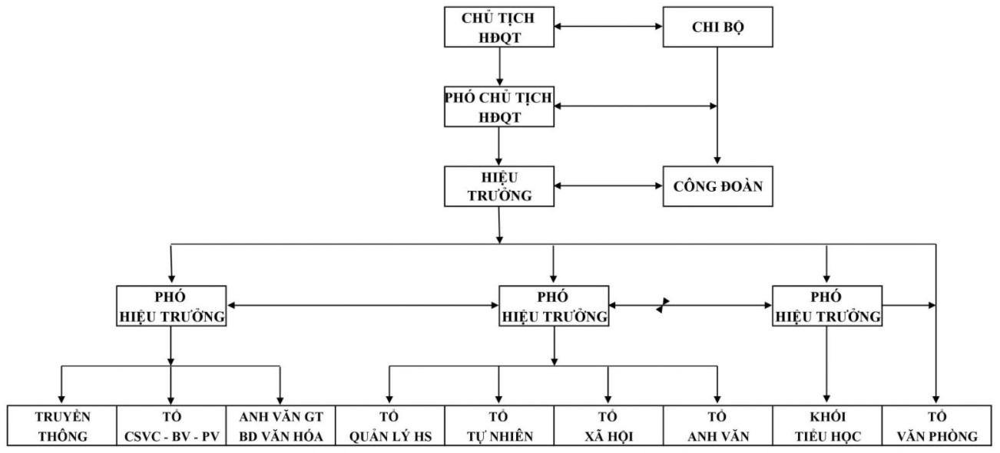

GIỚI THIỆU CHUNG
Địa chỉ: Thị trấn Bình Minh - Huyện Kim Sơn - Ninh Bình
Email : nbh-thptbinhminh@edu.viettel.vn
Điện thoại : 0900000000
1. Mô hình hoạt động: Chất lượng cao.
2. Đội ngũ giáo viên: 100% giáo viên tốt nghiệp Đại học trong đó hơn 30% có trình độ Thạc sĩ, một nhà giáo ưu tú. Là những giáo viên giỏi, chiễn sĩ thi đua được tuyển chọn từ những trường THCS có uy tín của quận Cầu Giấy và Thành phố Hà Nội, có năng lực chuyên môn vững vàng, có kinh nghiệm ôn thi học sinh giỏi, du học quốc tế; phẩm chất đạo đức tốt, tâm huyết với nghề, có phong cách ứng xử thân thiện với học sinh và phụ huynh học sinh. Ngoài ra, trường còn mời đội ngũ giáo viên người nước ngoài có kinh nghiệm giảng dạy, thân thiện với học sinh.
4. Mục tiêu đào tạo:
- Xây dựng nhà trường thành một đơn vị giáo dục chất lượng cao phù hợp với tinh thần số 07 của Sở Giáo dục về việc phát triển giáo dục trình độ chất lượng cao.
- Giúp học sinh phát triển toàn diện về đạo đức và trí tuệ, thể chất, thẩm mỹ và các kỹ năng cơ bản, phát triển năng lực cá nhân, tính năng động, sáng tạo, ý chí vươn lên và khả năng thích ứng cao.
- Trang bị kiến thức cơ bản theo tiêu chuẩn kiến thức của Bộ GD-ĐT, đảm bảo đạt điểm cao trong các kì thi học sinh giỏi, thi vào lớp 10 THPT, thi đỗ vào lớp 10 các trường THPT Chuyên và THPT chất lượng cao của Thành phố.
- Du học hội nhập Quốc tế.
5. Phương châm giáo dục:
- Quan tâm giáo dục toàn diện: kết hợp giáo dục kiến thức chuẩn với coi trọng giáo dục đạo đức, rèn luyện kĩ năng thực hành, kĩ năng sống, tổ chức các hoạt động giáo dục ngoài giờ lên lớp, ngoại khóa và bồi dưỡng học sinh có năng khiếu.
- Phát huy tính tích cực, chủ động, sáng tạo của học sinh: Khơi dậy và hun đúc cho mỗi ý tưởng sáng tạo, mỗi khả năng tiềm ẩn của các em, tăng cường khả năng thuyết trình, làm việc độc lập, làm việc theo nhóm để mỗi học sinh được thành công trong học tập và cuộc sống.
- Giao lưu và hội nhập quốc tế qua việc chú trọng dạy môn ngoại ngữ với bốn kĩ năng cơ bản giúp học sinh giao lưu và hội nhập tốt với bạn bè quốc tế, tổ chức liên kết với một số trường quốc tế giúp học sinh làm quen với môi trường giáo dục chuẩn quốc tế.
- Quan tâm đến vấn đề tâm lý học đường thông qua việc phối hợp với các trung tâm tư vấn tâm lý giáo dục giúp các em học sinh có tâm thế học tập thân thiện, tự tin, thoải mái và hiệu quả.
6. Phương thức hoạt động của trường:
* Hoạt động dạy và học:
- Thực hiện phương pháp giáo dục và dạy học tiên tiến với sự hỗ trợ tối ưu của trang thiết bị hiện đại. Tích cực đổi mới phương pháp giảng dạy và đào tạo phù hợp với mô hình đào tạo chất lượng cao; Bố trí sắp xếp thời khóa biểu hợp lý đảm bảo thời lượng cho các buổi học, tiết học tự chọn, nâng cao, ngoại khoá chuyên đề
- Tổ chức học bán trú hai buổi với chương trình tăng cường nâng cao, với sự quản lý kỉ luật nghiêm túc, nề nếp, quy củ.
- Tổ chức học theo phòng học bộ môn, học trên mạng; mở rộng các hình thức dạy và học đối với các trường trong và ngoài nước.
- Chỉ đạo khai thác, sử dụng có hiệu quả trang thiết bị phòng thí nghiệm, thực hành.
- Liên kết với các trường THPT, Đại Học trong và ngoài tỉnh, Trung tâm ngoại ngữ, …để mời giáo viên tham gia giảng dạy các chuyên đề, các Câu lạc bộ.
- Liên kết với một số trường ở các nước có nền giáo dục phát triển như Singapore, Anh quốc, Austraylia…để tổ chức liên hoan trại hè cho học sinh tham quan hội nhập, du học có học bổng…
- Tổ chức Câu lạc bộ năng khiếu cho học sinh (Văn hóa, nghệ thuật, thể thao…) Tổ chức các buổi hội thảo, cimena, các cuộc thi olympic… phục vụ cho công tác dạy và học.
* Hoạt động giáo dục toàn diện:
- Thực hiện các Kế hoạch
- Chương trình theo hướng dẫn của nhiệm vụ năm học các ngày kỉ niệm, ngày lễ lớn trong năm, sinh hoạt chủ đề…
- Tăng cường các hoạt động Đoàn – Đội – Câu lạc bộ năng khiếu, CLB Văn, Thể, Mỹ theo sở thích
- Tăng cường các hoạt động giao lưu bằng nhiều hình thức như: Thi đấu thể thao, biểu diễn văn nghệ, thi vẽ tranh, thi hùng biện, thi học sinh thanh lịch…với các trường bạn, các trường trong khu vực và quốc tế
- Tăng cường hoạt động của đội ngũ giáo viên chủ nhiệm, giáo viên bộ môn, các tổ chức xã hội, giao lưu các hoạt động văn hoá, văn nghệ, thể dục thể thao.
- Liên kết với Trung tâm tư vấn để kịp thời tư vấn về tâm lý, tình cảm cho giáo viên, học sinh, phụ huynh học sinh.
Ban giám hiệu Trường THPT Bình Minh
